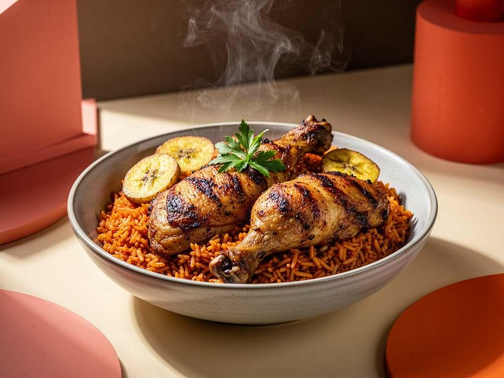
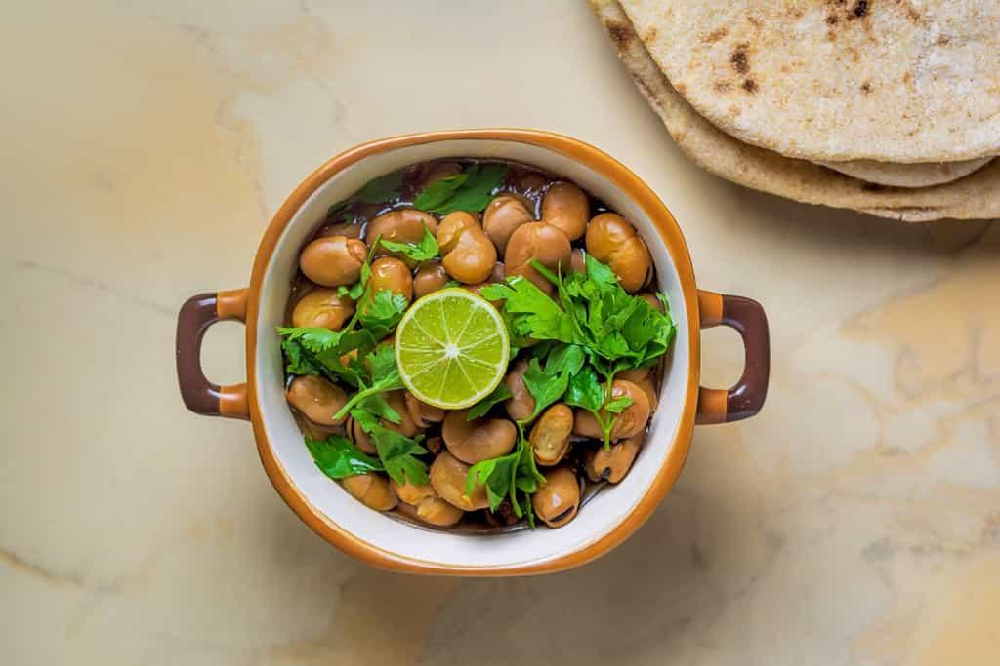
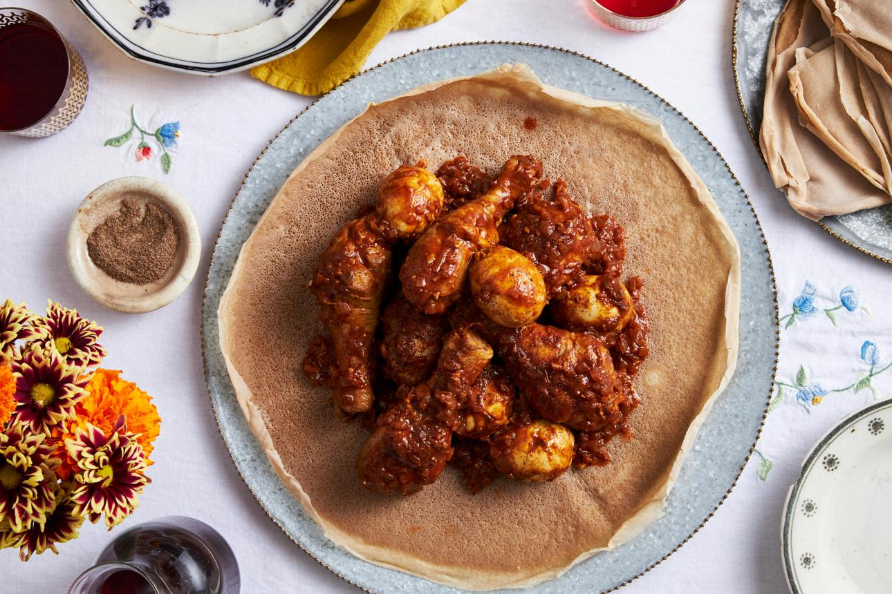
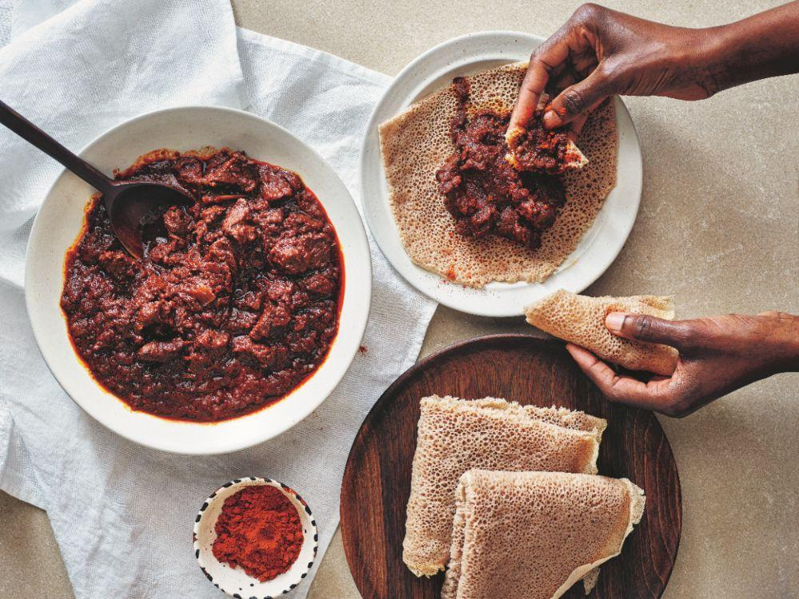
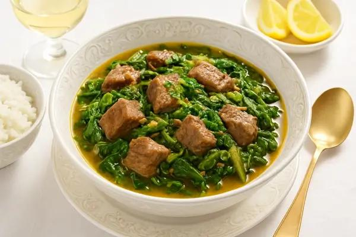

Nigeria • West Africa

Nigerian Jollof Rice
Fragrant parboiled long-grain rice simmered in a smoky, rich reduction of plum tomatoes, red bell peppers, onions, scotch bonnets, and dried thyme.
Explore time-tested dishes crafted with ancestral grains, aromatic spice blends, and slow-cooking techniques passed down across generations.

Fragrant parboiled long-grain rice simmered in a smoky, rich reduction of plum tomatoes, red bell peppers, onions, scotch bonnets, and dried thyme.

Tender slow-simmered fava beans seasoned with toasted cumin, garlic, and fresh lemon, dressed with golden sesame oil, crumbled gibna bayda, and herbs.

Iconic highland chicken stew braised slowly with deeply caramelized red onions, pungent berbere spice blend, niter kibbeh clarified butter, and boiled eggs.

Fiery Eritrean beef stew slow-cooked with generous quantities of berbere, puréed tomatoes, garlic, and spiced clarified butter until intensely rich and tender.

Madagascar’s revered national stew marrying tender braised beef with leafy anamalao greens that impart a distinctive, tingling peppery essence to the broth.